This is a tutorial to explain how to create a static website with all free tools and hosting. It will use:
[GitHub Pages](GitHub Pages) project site for free hosting
Obsidian to create the structure we want using simple markdown
Webpage Html Export plugin for Obsidian to export our notes as a website to be published
This is a vault to test out WebPage Html Export to GitHub pages.
This is a really easy way to create and maintain a website. It may not have all the bells and whistles of an eCommerce site but for something like a personal blog it is more than enough. There are also many providers out there that let you host Static Websites for free. And since GitHub pages and obsidian are also free you only need to pay if you want additional features like your own domain name.
Since this is a new vault I work work from scratch but I will later add links to my other pages when I move it to another vault
So we need to get this down to our desktop so we can later push our files back up. The easiest way to do this is to do what is called cloning the repository. You will need to download and install git software for this. In my case I am on a Debian based Linux distribution I already have it installed. Once you have git installed you can open a terminal or command prompt. On Linux terminal is in the menu.
We also need to create and setup and ssh key see these Connecting to github with SSH
ssh-add /home/username/.ssh/my-key note I did not use the .pub versionssh -T git@github.comI can get the repository URL to clone by going to my repo and clicking Code> SSH > and copy the URL:
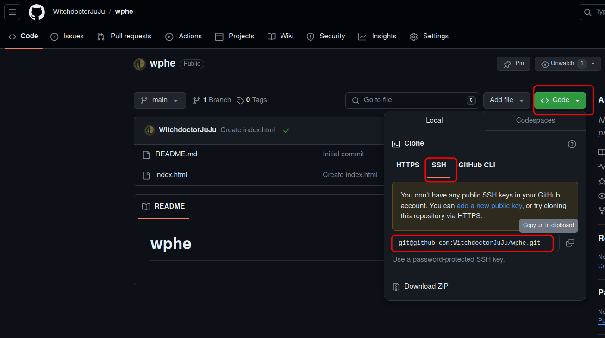
cd $HOME
# git clone URL
git clone https://github.com/WitchdoctorJuJu/wphe.git
cd wphe
git remote -v
This created a directory called wphe and it contains a hidden folder .git to keep track of your code changes. So don't delete that folder. We will use this folder going forward.
We can test our ability to push changes
In the new wphe directory open the index.html
<h1>Hello WPHE for Obsidian</h1>
I added for Obsidian to the header and saved the file.
git status
git add -u
git status
git commit -m "change index header"
git status
git push -u origin main
### my output
$ git push -u origin main
Enumerating objects: 5, done.
Counting objects: 100% (5/5), done.
Delta compression using up to 20 threads
Compressing objects: 100% (2/2), done.
Writing objects: 100% (3/3), 306 bytes | 306.00 KiB/s, done.
Total 3 (delta 0), reused 0 (delta 0), pack-reused 0
To github.com:WitchdoctorJuJu/wphe.git
781778b..adc8498 main -> main
Branch 'main' set up to track remote branch 'main' from 'origin'.
I do recommend you take a course on using git.
Then I check the url of my site again: https://witchdoctorjuju.github.io/wphe/
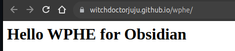
And we see the changes. So we can successfully make changes on our laptop/desktop and push those changes up to GitHub. Note that you may have to do the SSH add step each time you boot your computer if you need that step.
We are talking about the plugin WebPage Html Export" in the Obsidian plugins. I should note that before you proceed you may want to consider if plugins are a security concern for you.
First we need to first allow plugins to be used in Obsidian Settings (Cog) > Community Plugins > Turn On Community Plugins (Button) . Notice the link on Plugin Security as well.
Once plugins are allowed we must go back into **Settings (Cog) > Community Plugins > Browse > Search: Webpage Html Export > click to select, then click install.
Now that the plugin is installed, we have to enable it.
Settings (Cog) > Community Plugins on the bottom of the page is a now shown the plugin, toggle the circle to enable the plugin. This screenshot shows the plugin enabled.
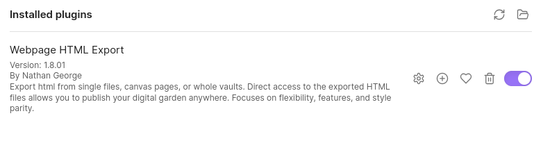
Ctrl-E)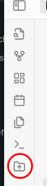
The export can be found on the left hand window. At least this is how it looks on Linux desktop. The icon is probably similar on other versions.
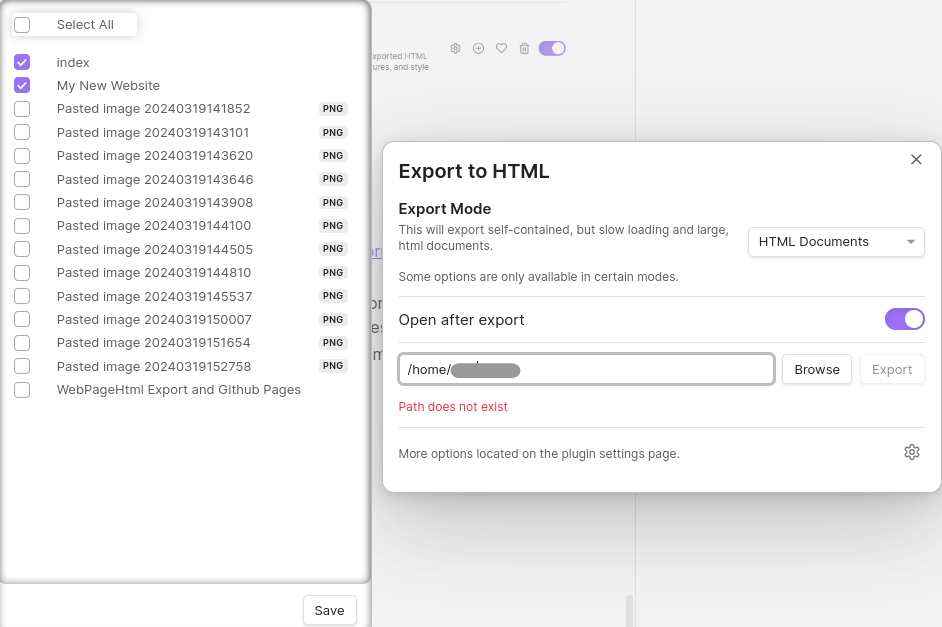
Be sure to first create a folder for the export. I used /home/user/wphe_dev. I gave it a different name because I do not want to mix the development with the production website. Then I clicked export and used the settings above. Note that I have not had to check the images for it to work. Click "save" after you select the pages you want and it will remember it for next time. Export Mode "HTML Documents" works best for viewing the files locally on your computer. This is a great development mode without a webserver. When the file manager opens right0-click on the index file and open in a browser i.e. Firefox, Chrome, Edge, Safari, .... Click around and see how it works.
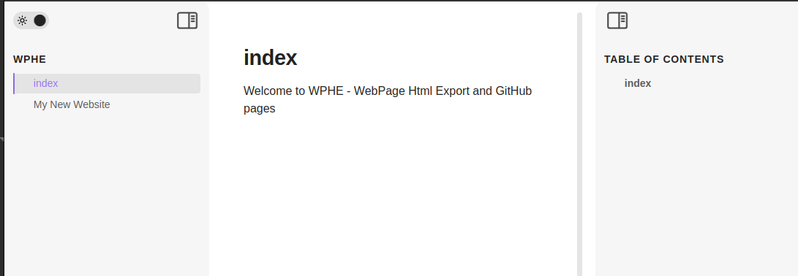
See how easy that was.
So I realize some things are not as I want them
Lets try to change these things
First, I recommend setting the following in Settings:
That second one will automatically fix links if you move pages around inside your vault.Very helpfil.
Settings > Files and Links >
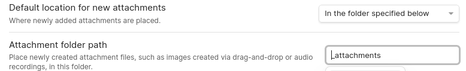
if you do this, all attachments get put in a folder called _attachments at the top of your vault. Check the drop down for more options. You may need to paste a new image into a note and it will create the folder. Once it exists I can simply drag all of those "Pasted image..." PNG into the _attachments folder. That's better...
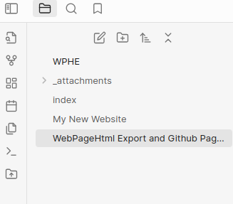
Now all future attachments should go into that same folder.
We use Properties to add the title. First we select the page with the name index in our left hand notes pane and select the page on the right as if we were going to type in more info. I tried it once without selecting the page and the steps below failed.
Then select the command pallet as shown below
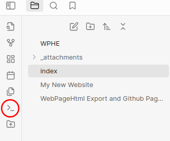
In the popup, Search for "Add file property" and select it.
Add a property called "title" and give it a display name. You should end up with something like this.
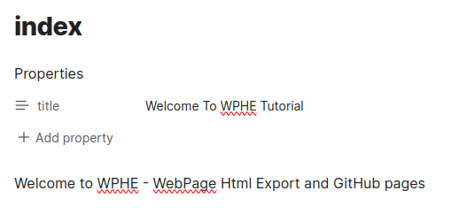
At this point lets do another export as this setting is in the export.
In the export settings, this time select the settings cog below the export button. Under MetaData >
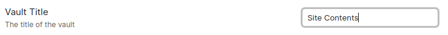
I changed it from WPHE to Site Contents.
Click export again and view in a browser.
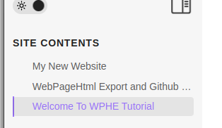
Nice our site name is fixed.
Ok so lets change the settings and export our production site this time.
Change these
git status
git add --all
git status
git commit -m "first prod website"
git status
git remote -v
git push -u origin main
oops I was trying to show you the easy way. But I got the message.
remote: Support for password authentication was removed on August 13, 2021.
remote: Please see https://docs.github.com/get-started/getting-started-with-git/about-remote-repositories#cloning-with-https-urls for information on currently recommended modes of authentication.